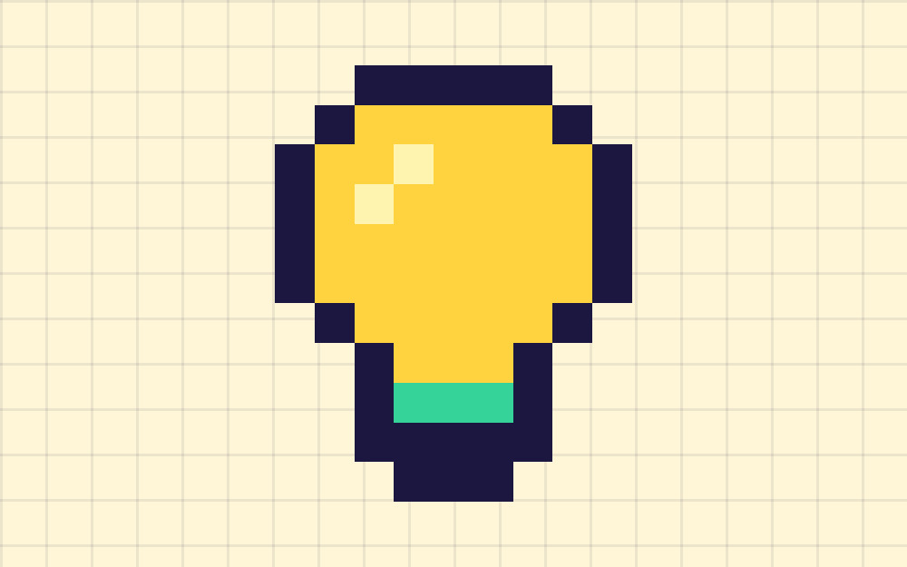
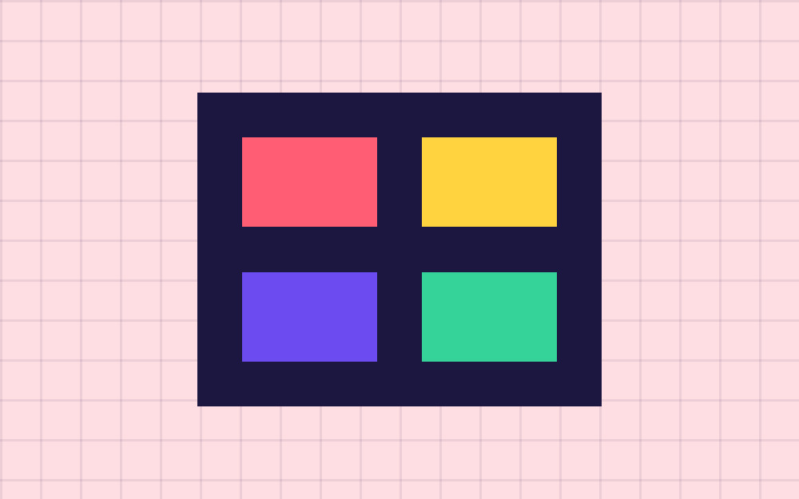
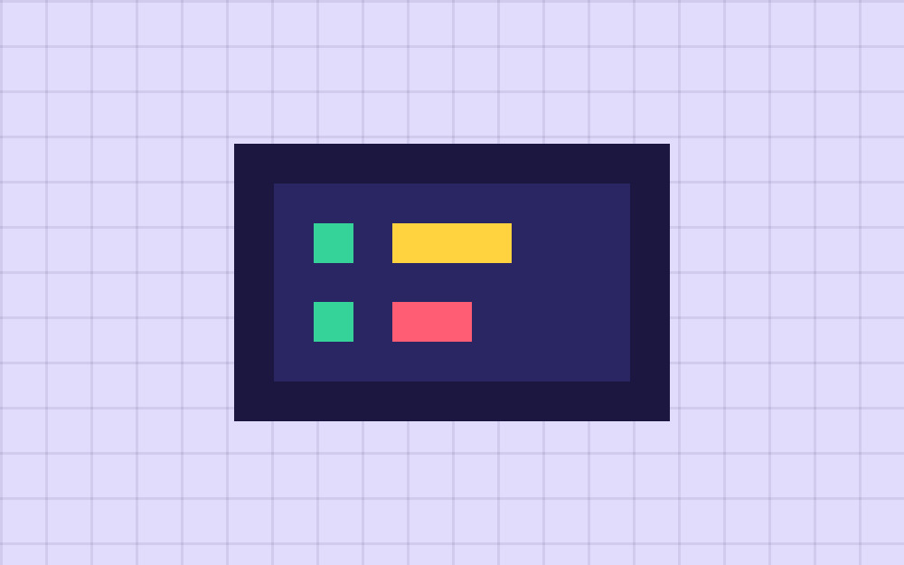
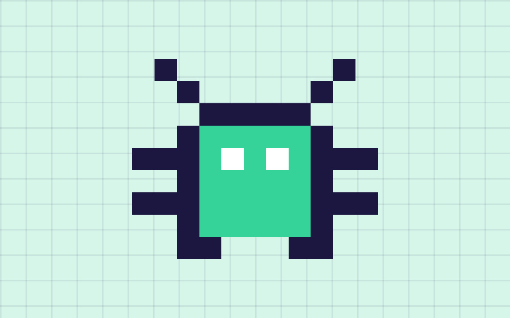
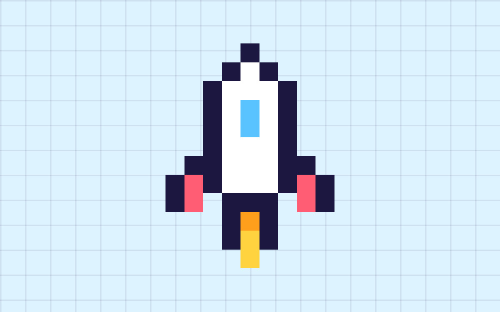

El proceso en cinco imágenes.
Ilustraciones pixel art propias que resumen las fases clave. Selecciona una para verla completa.


Concepto
Todo empieza con una idea: género, jugabilidad y ambiente.


Arte
Colores, sprites e interfaz le dan identidad visual al juego.


Código
La programación hace que el personaje corra, salte y responda.


Pruebas
Los testers cazan errores antes de que lleguen al jugador.


Lanzamiento
El juego sale al mercado y empieza la etapa de actualizaciones.